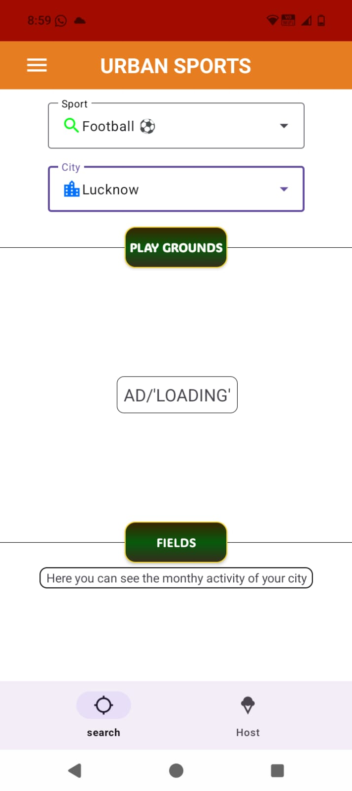
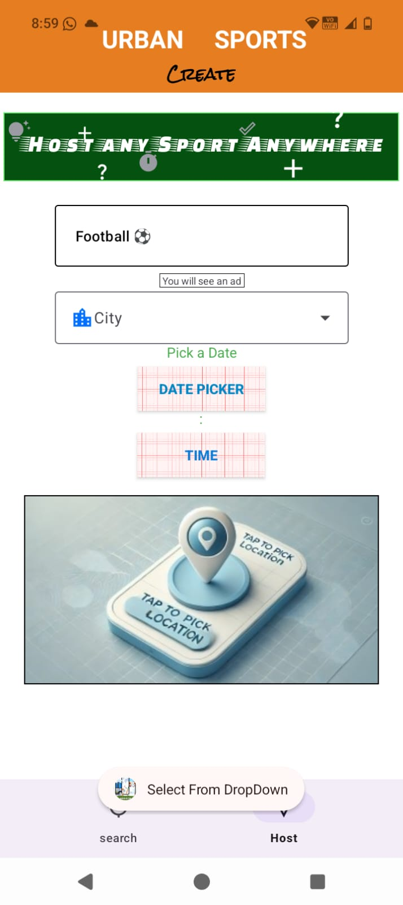
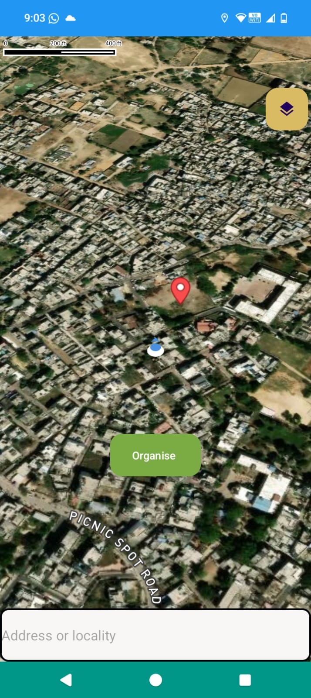
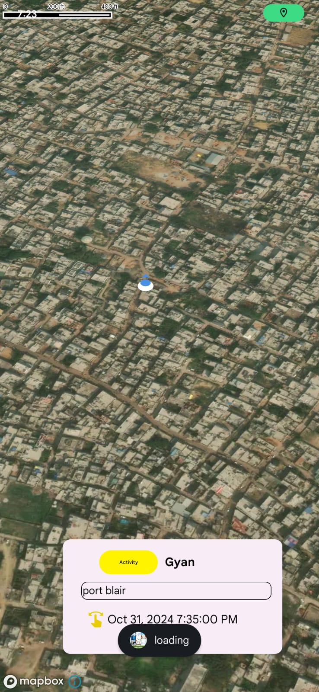
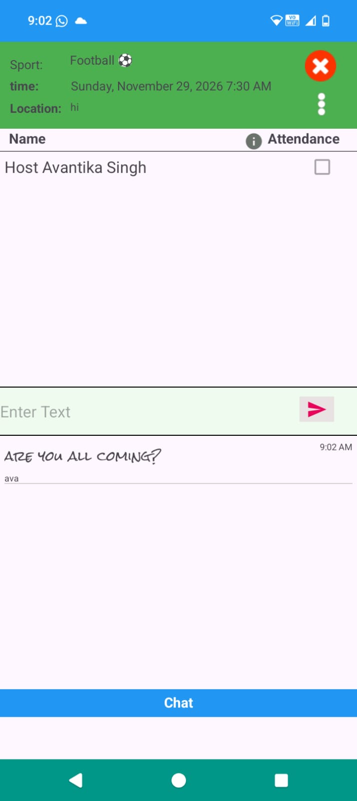
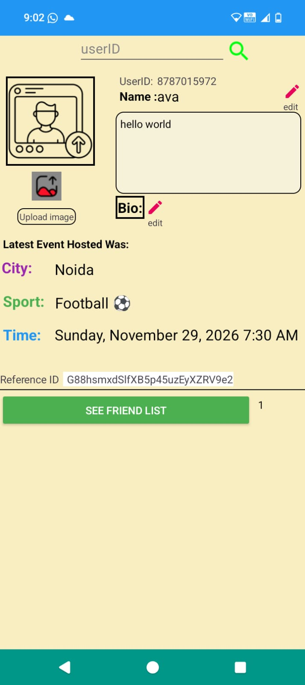
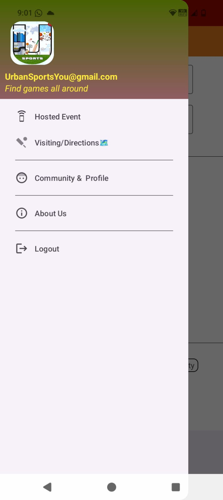
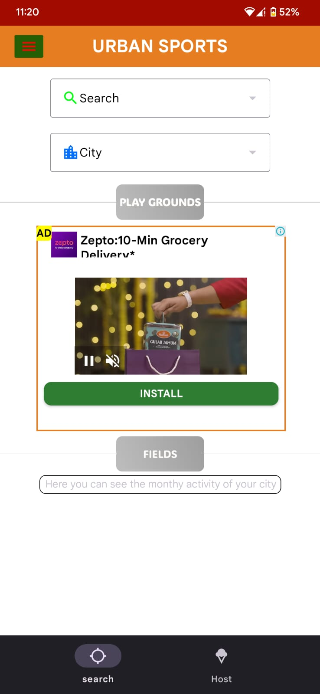

MOBILE APPLICATION PROJECT
Urban Sports
Find games. Create events. Play anywhere.
About the Project
Urban Sports is a sports event discovery and organising application designed to connect people through sporting activities. Users can discover sporting activities in different cities, find nearby playgrounds, organise their own events and invite others to participate. The application brings event discovery, geographical locations and community interaction together in one place.
Key Features
Event Discovery
Search for sporting activities based on sport and city.
Host Events
Create sporting events by selecting a sport, city, date and time.
Location Selection
Select geographical locations through an interactive map.
Community
View event participants and communicate through event chat.
User Profiles
Manage profile information, biography and profile image.
Event Management
Organise activities and view event attendance.
Application Screenshots
A look at different screens and functionalities of Urban Sports.








Technical Challenges & Solutions
CHALLENGE 01
RecyclerView
Challenge: Implementing and managing dynamic lists of application data.
Solution: Used RecyclerView to display and manage list-based content.
CHALLENGE 02
Preference Storage
Challenge: Managing and storing user preferences locally.
Solution: Used Android DataStore Preferences for local storage.
Technology
Technologies and tools used in this application:
<Technology & Implementation
Core Implementations
- Application lifecycle management for stability.
- Firebase Database integration.
- RecyclerView for displaying application data.
- DataStore Preferences for local preference storage.
- Mapbox API integration for geographical features.
- In-app messaging for user communication.
- Image upload functionality for user profiles.
Additional technologies can be added once we document the actual implementation.